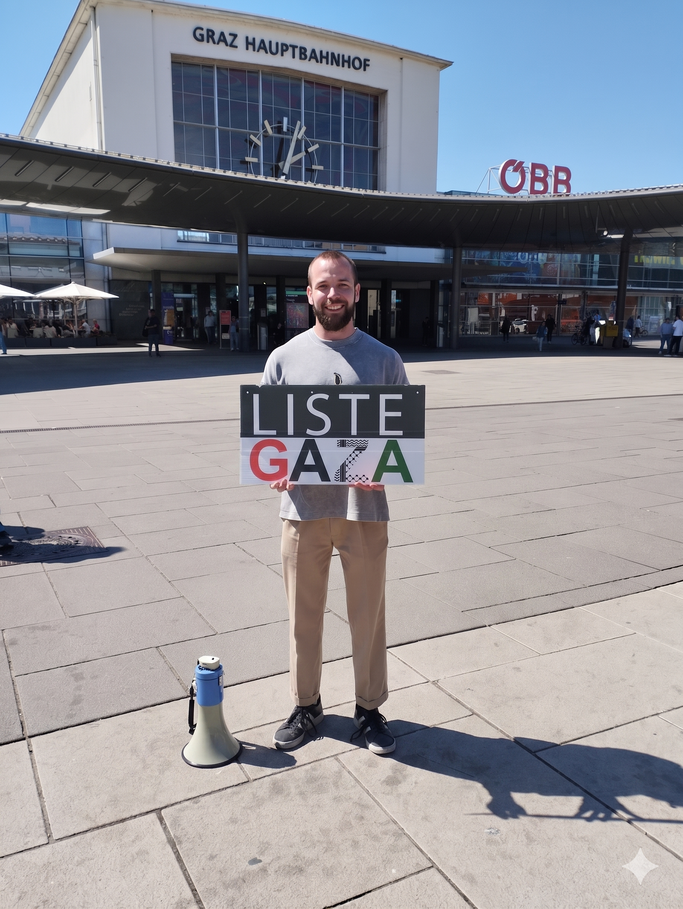
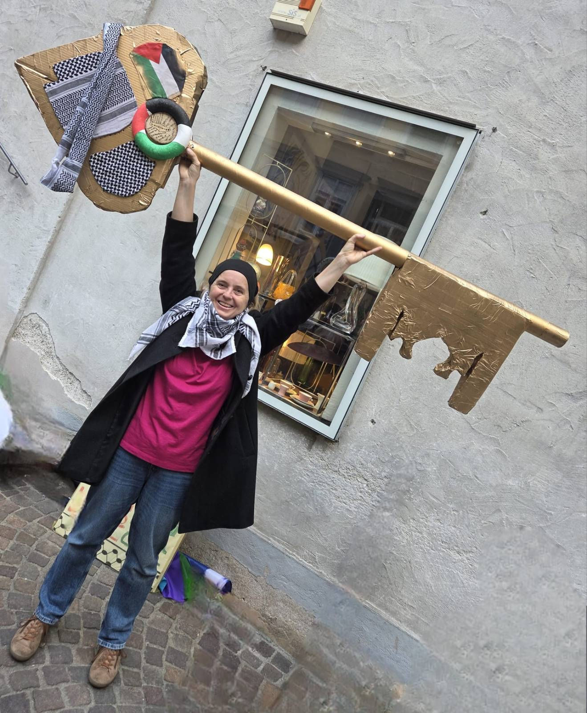
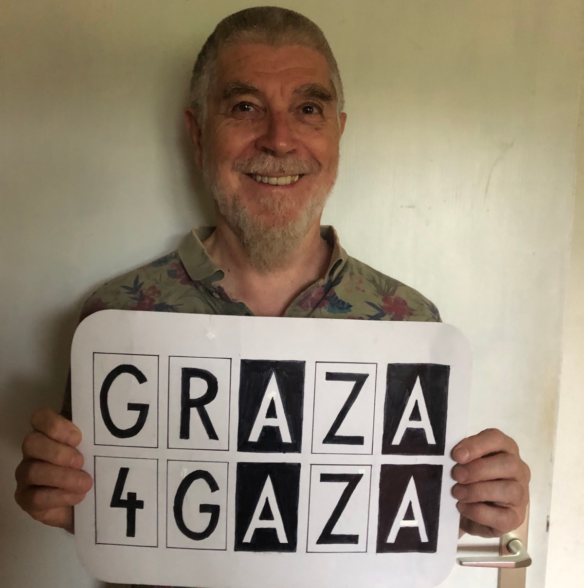
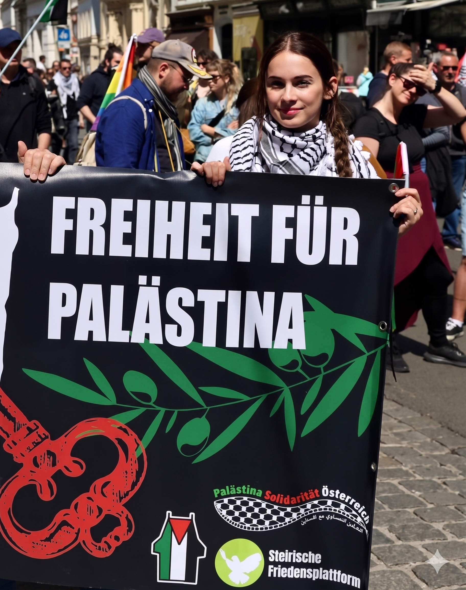
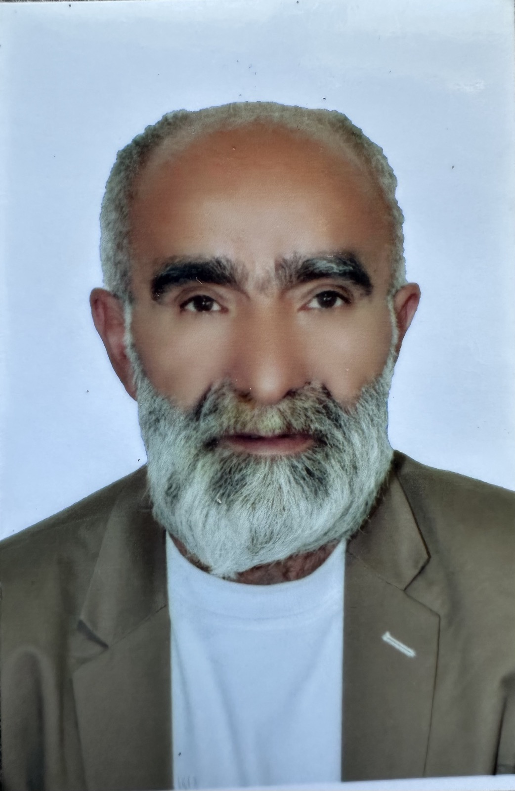

"Unsere Politiker haben nichts mehr zu bieten, außer leere Phrasen (Mut, Hoffnung, Glaubwürdigkeit, Sicherheit, Zukunft, …). Sie suggerieren uns damit, sie hätten Lösungen für die Probleme unserer Zeit. Der Grazer Gemeinderat hat jedoch in Wahrheit entgegen dieser leeren Versprechungen auf Wohnen, Arbeit oder Energiepreise kaum Einfluss. Globale Finanzmärkte und die Straße von Hormus bestimmen unser Leben weitaus mehr als Parlamentsbeschlüsse. Das wird den Menschen verschwiegen, weil man ihnen nicht zutraut, es zu verstehen. Deshalb hat man zu Recht das Gefühl: Egal, wer regiert – es ändert sich nichts. Wir wollen dazu beitragen, dass wichtige Themen den Raum bekommen, den sie brauchen. Und dass Verbrechen wie jene um Epstein, die USA oder Israel nicht länger verschwiegen werden können. Es braucht radikale Ehrlichkeit und einen Blick, der weiter geht als bis zur Stadtgrenze."

"Durch Druck des zionistisch gesinnten Präsidenten der Jüdischen Gemeinde Graz fasste der Gemeinderat Graz 2019 einen Beschluss gegen 'Antisemitismus und BDS'. Seitdem dürfen Diskussionen über die zivilgesellschaftliche Boykott-Israelische-Apartheid-Bewegung BDS und Kritik am Zionismus in städtischen Räumen nicht mehr organisiert werden. Vereinen, die derartige Aktivitäten zulassen, werden die Förderungen gestrichen. Amnesty International fordert von der Stadt Graz die Aufhebung dieses Beschlusses, der eine eklatante Verletzung des Menschenrechts auf Meinungsfreiheit bedeutet, Kritiker:innen von Apartheid und Völkermord zum Schweigen bringen soll und einen Nährboden für Repression bildet. Trotz Genozid in Gaza, tagtäglichem Siedlerterror in der Westbank, Einführung der Todesstrafe für palästinensische Gefangene hält die Stadt Graz an diesem Beschluss fest! Sie stellt sich damit aktiv gegen ein Waffenembargo gegen den Völkermörder Israel! Deshalb braucht es eine Liste GAZA, die Haltung zeigt! Denn die Lehre nach 1945 kann nur lauten: Nicht Schweigen zu Völkermord! Nie wieder Faschismus! Nie wieder Krieg!"

"Ich kandidiere für die Liste GAZA, weil ich es unerträglich finde, wie wir in Europa dem Imperium USA und Israel dabei zusehen, wie sie internationales Recht zerstören und Straffreiheit für ihre Verbrechen genießen. Der Völkermord in Gaza ist momentan der globale Brennpunkt und Sinnbild dieser Krise des Völkerrechts. Wollen wir wirklich in einer Welt leben, in der nur mehr das Recht der großen Banken und Konzerne und des militärisch Stärkeren zählt? Im Sinne von „global denken - lokal handeln“, bleibt uns nichts anderes übrig, als genau hier aktiv zu werden. Deshalb muss man gerade von der Menschenrechtsstadt Graz einfordern, viel klarer Stellung gegen den Völkermord zu beziehen."

"Alle erkämpften (niemals geschenkten) Errungenschaften, die das Leben lebenswert machen, können uns, wenn wir es zulassen, wieder weggenommen werden. Die derzeitigen globalen Zuspitzungen zeigen uns zwei Dinge: 1. Die Welt wurde zu einem globalen Dorf; wenn es in mehreren Häusern meiner Nachbarschaft brennt, gibt es irgendwann einen Flächenbrand. 2. Dieses System der Ausbeutung potenziert Konflikte, die uns offenbaren: Wenn wir uns nicht wehren, sind wir es, die für die Profite der Reichen in den brennenden Häusern zurückgelassen werden. Konkret: In Europa (und auch in Österreich) werden Milliarden in die Aufrüstung gesteckt, um sich auf einen Krieg vorzubereiten, der als alternativlos dargestellt wird, weil man wieder eine relevante Weltmacht sein will. Für die, die meinen Bruder an die Front schicken, sind wir Verbrauchsgegenstände. Das menschlichste, das man in diesen Zeiten tun kann, ist für den Frieden zu kämpfen. Auf jeder Ebene. Die Liste GAZA ist ein kleiner Beitrag in dieser Bewegung."

"Ich bin Kurde. Mein Volk wird in mehreren Staaten unterdrückt. Die Forderung nach globaler Gerechtigkeit ist ein Schlüssel für eine friedliche Zukunft."